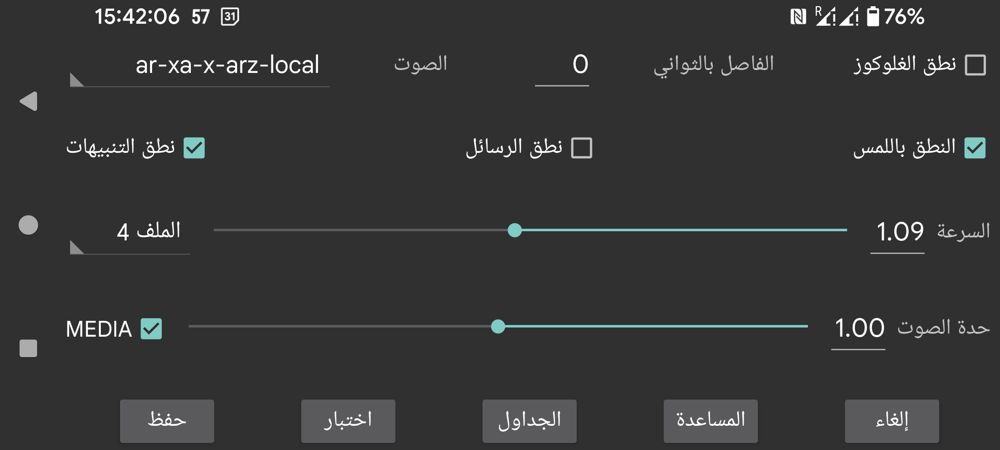

ar be de es fr nl pl ru tr uk zh en
ينطق قيم الغلوكوز عند وصولها.
الثواني بين: يحدد عدد الثواني التي يجب أن ينتظرها Juggluco قبل نطق قيمة الغلوكوز التالية. تُنطق قيم الغلوكوز دائمًا فور وصولها. وإذا حُددت قيمة كبيرة، فسيتجاوز Juggluco قيم الغلوكوز التي تصل قبل انقضاء هذه المدة.
الصوت: يختار متحدثًا من قائمة المتحدثين الممكنين.
السرعة: رقم أكبر يعني كلامًا أسرع.
الحدة: رقم أكبر يعني نبرة أعلى.
اختبار: ينطق آخر قيمة غلوكوز.
في بعض الهواتف يجب تغيير إعدادات Android الخاصة بتحويل النص إلى كلام حتى تعمل هذه الميزة. وأحيانًا يجب تثبيت بيانات اللغة أو تغيير الإعدادات. وفي هواتف Samsung يجب ضبط Google text-to-speech بدلًا من Samsung text-to-speech engine حتى يمكن اختيار أصوات مختلفة. ويمكن العثور على هذه الخيارات بالبحث عن text-to-speech في إعدادات Android أو بالذهاب إلى اللغة والإدخال (->متقدم)->تحويل النص إلى كلام. وهناك يمكنك اختيار Speech Services by Google وتثبيت بيانات الصوت. وفي هواتف أخرى يكون ذلك تحت إعدادات النظام->إمكانية الوصول->الرؤية->إعدادات تحويل النص إلى كلام.
عند تشغيل النطق باللمس، فإن اللمس في أماكن معينة يؤدي إلى النطق:
لمس قيمة الغلوكوز الحالية؛
لمس نقاط الرسوم البيانية ونقاط المسح؛
لمس الكميات؛
يُنطق تاريخ تلك النقطة من الرسم البياني عند لمس الركنين العلويين الأيسر والأيمن؛
الضغط المطوّل على عنصر من عناصر القائمة؛
الضغط المطوّل على كمية في قائمة الكميات (القائمة اليسرى الوسطى->القائمة).
يقرأ الرسائل النصية التي تظهر مؤقتًا على الشاشة، ونتيجة المسح (رسائل الخطأ وقيمة الغلوكوز).
ينطق مستوى الغلوكوز أثناء إنذارات انخفاض الغلوكوز وارتفاعه. وتُقرأ القيمة عند بدء الإنذار وكذلك عند اللحظة التي يتم فيها إيقاف الإنذار.
اختر الملف الشخصي النشط. الافتراضي هو الملف الشخصي الافتراضي. جميع الإعدادات الموجودة في القائمة اليسرى → الإعدادات → الإنذارات والنطق تكون خاصة بالملف الشخصي النشط.
يمكنك إعداد Juggluco لتفعيل ملف شخصي في وقت محدد من اليوم.
يمكنك زيادة أو خفض مستوى صوت النطق في إعدادات Android تحت الصوت. وإذا كان MEDIA مغلقًا، فأنا أستطيع على هاتفي التحكم به بواسطة شريط صوت الإشعارات، وعلى ساعة WearOS بواسطة شريط صوت النظام. وينبغي ألا يُسمع عندما يكون “عدم الإزعاج” مفعّلًا. وعندما يكون MEDIA مفعّلًا، يُستخدم شريط صوت الوسائط، وعلى معظم الهواتف سيُسمع أثناء “عدم الإزعاج”
نطق الإنذارات يختلف عن ذلك. إذ تُنطق الإنذارات ضمن فئة “الإنذارات” عندما يكون “Alarm is Alarm” مفعّلًا. وعلى هاتفي يُضبط الصوت بواسطة شريط الإنذار، وعلى ساعتي بواسطة شريط الإشعارات.